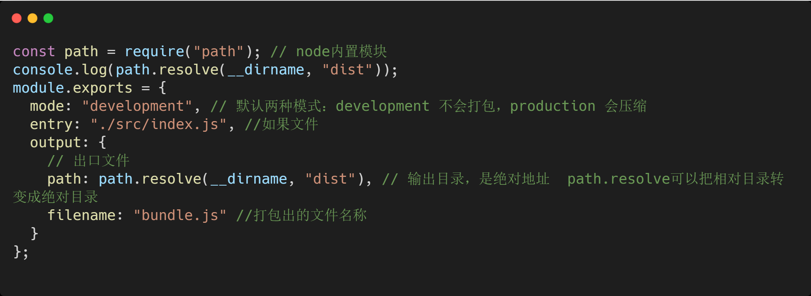
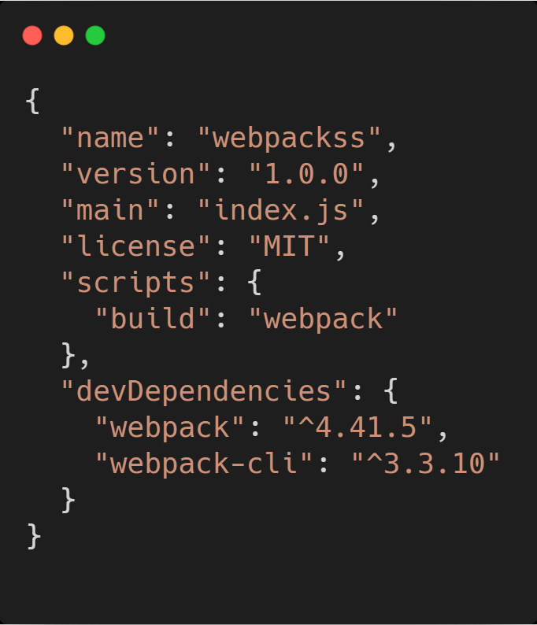

webpack的基础配置
安装
1.初始化
初始化后，会生成一个package.json的默认文件

2.安装webpack和webpack-cli

0配置
直接在命令行运行 npx webpack 会自动对js文件进行打包。默认把src/index.js打包到dist目录下的main.js。虽然可以支持0配置。但是0配置的功能太弱了，满足不了日常需求。
3.手动配置
基本的配置如图：

手动配置的时候，在项目根目录下，创建一个webpack.config.js文件。在终端运行npx webpack。会去找node_modules下的webpack目录，但是webpack又是依赖于webpack-cli的。在webpack-cli/bin/config/config-yargs.js中有这么一段话：defaultDescription: "webpack.config.js or webpackfile.js"。意思是运行npx webpack的时候，会去默认的找webpack.config.js或者webpackfile.js。
4.添加脚本
如果想通过npm run来运行打包命令，则需要配置package.json中的script。然后在终端运行npm run build。

5.自定义webpack配置文件的名称
有的时候，配置文件不想命名为webapck.config.js，想命名为其它名字，当然也是支持的。比如想换成config.js。只需要修改package.json中的script内容即可。通过--config指定配置文件。